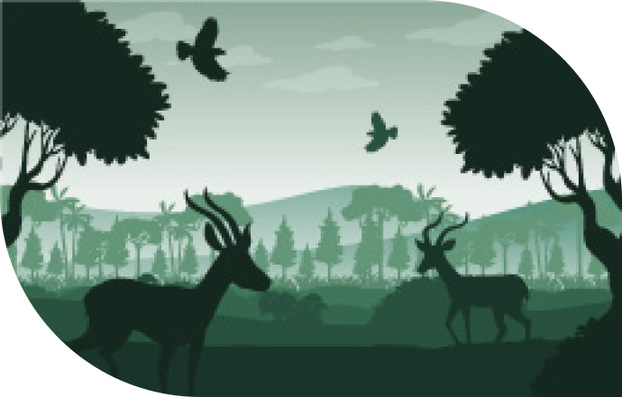

Quiénes Somos
Bienvenido a CUIDA, un proyecto apasionado y comprometido con la naturaleza. Desde su creación, hemos estado trabajando incansablemente para proteger nuestro planeta y garantizar un futuro sostenible para las próximas generaciones. Juntos, hacemos la diferencia y trabajamos incansablemente por nuestro mundo.
CUIDA fue fundado por Felipe García, un apasionado de la naturaleza y la conservación. Con más de 20 años de experiencia en el campo, Felipe ha dirigido numerosos proyectos de reforestación y sostenibilidad en todo el mundo. Su visión es crear un movimiento global de personas dedicadas a proteger el medio ambiente y asegurar la supervivencia de nuestro planeta para las futuras generaciones.
Nuestro enfoque es integral y colaborativo. En CUIDA, entendemos que la lucha contra el cambio climático requiere un esfuerzo conjunto, y por eso trabajamos estrechamente con comunidades, empresas y gobiernos para implementar soluciones efectivas y sostenibles. Creemos que cada pequeño esfuerzo cuenta y que juntos podemos marcar una gran diferencia.
Desde programas de reforestación masiva hasta proyectos innovadores de energía limpia, nuestras iniciativas están diseñadas para generar un impacto positivo y duradero en el medio ambiente. Nuestro compromiso es educar, inspirar y empoderar a las personas para que se conviertan en defensores activos del planeta y trabajen juntos para asegurar un futuro más verde y saludable.
¡Bienvenidos a CUIDA!